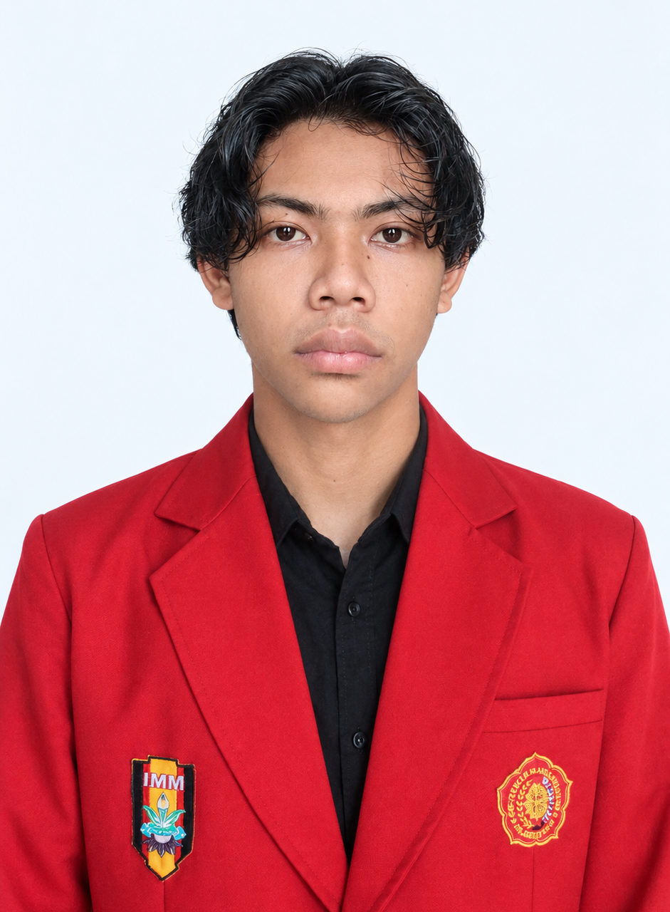

HALO, SELAMAT DATANG DI WEBSITE SAYA
Hai, saya Arief Budiman. versi 2
Mahasiswa yang tertarik pada teknologi, pengembangan web, dan pemanfaatan komputasi awan.

TENTANG WEBSITE
Ruang digital untuk belajar dan berkarya.
Website ini dibuat sebagai bagian dari tugas mata kuliah Komputasi Awan. Di dalamnya terdapat profil singkat, materi dasar komputasi awan, serta dokumentasi tugas yang dapat diakses melalui satu halaman web.
JELAJAHI WEBSITE
Materi Komputasi Awan
Kenali konsep cloud computing, model layanan, manfaat, dan risikonya.
Baca materi ↗ 02Portofolio Tugas
Kumpulan ringkasan dan tautan menuju hasil Tugas 1 dan Tugas 2.
Lihat tugas ↗Terus Bertumbuh
Website ini akan diperbarui seiring proses belajar dan pengembangan kemampuan.
Versi 1.0 •